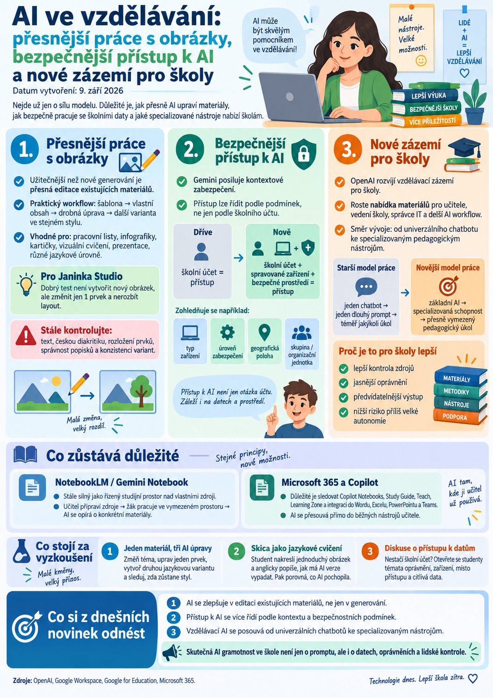

{kind=link}

Začátek září ukazuje další důležitý posun ve vývoji umělé inteligence pro školy. Pozornost se už nesoustředí pouze na to, jak výkonný je konkrétní model. Stále důležitější je, jak přesně lze AI upravovat existující materiály, jak bezpečně se dostane ke školním datům a jaké specializované nástroje nabízí učitelům.
Pro učitele a tvůrce vzdělávacích materiálů jsou tentokrát nejzajímavější tři oblasti: přesnější práce s obrázky v ChatGPT, kontextové zabezpečení Gemini a rostoucí nabídka vzdělávacích materiálů a nástrojů přímo od OpenAI.
ChatGPT Images 2.5: zajímavější je editace než samotné generování
OpenAI představilo 8. září novou verzi nástroje pro tvorbu a úpravu obrázků v ChatGPT.
Pro učitele není nejzajímavější to, že AI dokáže vytvořit další nový obrázek od nuly. Mnohem praktičtější je přesnější následná editace již existujícího materiálu.
Nový pracovní postup může vypadat například takto:
To je přesně způsob práce, který může být užitečný při tvorbě:
- pracovních listů,
- infografik,
- kartiček,
- vizuálních cvičení,
- prezentací,
- materiálů pro různé jazykové úrovně.
Proč je to zajímavé pro Janinka Studio
Při tvorbě vzdělávacích materiálů bývá často největší problém v tom, že AI vytvoří pěkný návrh, ale každá další úprava rozbije něco jiného.
Praktický test by proto neměl znít:
„Vygeneruj mi nový pracovní list.“
Mnohem užitečnější je vyzkoušet:
- vezmi existující vizuální materiál,
- změň pouze jedno téma,
- zachovej styl a strukturu,
- uprav jediný prvek,
- vytvoř druhou jazykovou variantu.
Pokud AI zvládne několik takových kroků bez rozpadu layoutu, začíná být skutečně použitelná pro profesionálnější tvorbu materiálů.
Skica jako výukový nástroj
Zajímavou možností je také převod jednoduché skici na hotový obrázek.
To lze využít přímo ve výuce angličtiny.
Student například nakreslí jednoduchý pokoj, dílnu, ulici nebo město a anglicky popíše, co má výsledný obrázek obsahovat.
Poté porovná:
- co AI pochopila správně,
- co interpretovala jinak,
- které části popisu byly nepřesné,
- jak by bylo potřeba zadání upravit.
Taková aktivita propojuje jazyk, přesnost vyjadřování a AI gramotnost.
Student se neučí jen „napsat prompt“, ale také pozorovat, jak AI interpretuje instrukce.
Přesnější editace stále není bezchybná
Ani novější verze obrazových nástrojů není vhodné chápat jako plnohodnotnou náhradu grafického editoru.
Při tvorbě školních materiálů je stále potřeba kontrolovat:
- text,
- českou diakritiku,
- rozložení prvků,
- správnost popisků,
- konzistenci mezi jednotlivými variantami.
U generativní AI stále platí jednoduché pravidlo: může opravit jednu část a zároveň nečekaně změnit jinou.
Proto má největší smysl tam, kde člověk výsledek průběžně kontroluje.
Gemini posiluje kontextové zabezpečení
Google zároveň rozšiřuje bezpečnostní možnosti Gemini v prostředí organizací.
Pomocí funkce Context-Aware Access může správce určit, za jakých podmínek se uživatel k AI vůbec dostane.
Rozhodovat může například:
- typ zařízení,
- úroveň jeho zabezpečení,
- geografická poloha,
- členství v určité skupině,
- organizační jednotka.
To je důležité především ve chvíli, kdy AI získává přístup k interním dokumentům, agentům nebo automatizovaným školním workflow.
Školní účet už nemusí být jedinou podmínkou
Dříve býval bezpečnostní model velmi jednoduchý:
Novější přístup může vypadat například:
To je významný posun.
Pokud bude AI pracovat s citlivějšími školními dokumenty, je logické, že přístup nebude řízen jen přihlašovacím jménem a heslem.
Pro školy může být v budoucnu stejně důležité řešit odkud a za jakých podmínek se AI používá.
Bezpečnost se stává součástí AI gramotnosti
Učitel ani student nemusí znát technické detaily správy podnikových systémů.
Měl by ale chápat základní princip:
Přístup k AI není jen otázka účtu. Záleží také na tom, k jakým datům má nástroj přístup a v jakém prostředí je používán.
To je užitečný základ pro diskusi o bezpečnosti AI ve škole.
OpenAI vytváří vlastní vzdělávací zázemí pro školy
OpenAI zároveň rozvíjí samostatnou část OpenAI Academy zaměřenou na školy a vzdělávání.
Materiály jsou určeny například pro:
- učitele,
- vedení školy,
- správce IT,
- uživatele ChatGPT Edu,
- práci s delšími AI workflow.
Zajímavý je především posun od obecného používání ChatGPT ke specializovaným nástrojům pro konkrétní vzdělávací úlohy.
Od univerzálního chatbotu ke specializovaným schopnostem
První generace práce s AI často vypadala takto:
Novější směr je odlišný:
Takový nástroj může být například určen pouze pro:
- tvorbu výukového materiálu,
- diferenciaci úlohy,
- přípravu procvičování,
- práci s konkrétní sadou školních zdrojů,
- vedení žáka při učení.
Pro vzdělávání je to zpravidla bezpečnější a přehlednější než univerzální agent s přístupem ke všemu.
Proč jsou specializované nástroje pro školy výhodnější
U školní AI je důležité nejen to, co umí, ale také to, co neumí a k čemu nemá přístup.
Specializované nástroje umožňují lépe kontrolovat:
- zdroje,
- oprávnění,
- očekávaný výstup,
- způsob použití,
- míru autonomie.
Čím více AI získává schopnost jednat samostatně, tím důležitější bude právě tato vrstva kontroly.
NotebookLM a Gemini Notebook
U Gemini Notebooku se v posledních dnech neobjevila změna, která by zásadně měnila způsob práce.
Nadále je nejzajímavější využití notebooků jako řízeného studijního prostoru nad vlastními zdroji.
Právě tento princip zůstává pro školy velmi silný:
To je pedagogicky bezpečnější než neomezený chatbot pracující bez jasně daných zdrojů.
Microsoft 365 a Copilot
Ani u Microsoft 365 se v posledních dnech neobjevila zásadní změna, která by měnila doporučené školní workflow.
Stále má smysl sledovat především:
- Copilot Notebooks,
- Study Guide,
- Teach,
- Learning Zone,
- hlubší integraci AI s Wordem, Excelem, PowerPointem a Teams.
Pro školy využívající Microsoft 365 je důležité zejména to, že AI se stále více přesouvá přímo do běžných nástrojů učitele, místo aby fungovala jako samostatná aplikace.
Co stojí za vyzkoušení
1. Jeden materiál, tři AI úpravy
Vezměte existující infografiku nebo pracovní list a zkuste tři následné změny:
- změnit téma,
- upravit jeden konkrétní prvek,
- vytvořit druhou jazykovou variantu.
Sledujte, zda AI zachová původní styl a strukturu.
To je mnohem lepší test praktické použitelnosti než jednorázová tvorba nového obrázku.
2. Skica jako jazykové cvičení
Student nakreslí jednoduchý obrázek a v angličtině přesně popíše, jak má výsledná AI verze vypadat.
Poté porovná zadání s výsledkem a vysvětlí:
- co AI pochopila,
- co nepochopila,
- co bylo potřeba popsat přesněji.
Aktivita spojuje jazykovou produkci, analýzu a AI gramotnost.
3. Diskuse o přístupu k datům
Při práci s AI lze studentům položit jednoduchou otázku:
Stačí, že se přihlašuji školním účtem, aby bylo používání AI automaticky bezpečné?
Odtud lze otevřít témata:
- oprávnění,
- zařízení,
- místo přístupu,
- školní data,
- citlivé informace.
To je velmi praktická část digitální gramotnosti.
Co si z dnešních novinek odnést
Současný vývoj ukazuje tři důležité směry.
AI se zlepšuje v editaci existujících materiálů, ne jen v jejich generování.
Přístup k AI se stále více řídí podle kontextu a bezpečnostních podmínek.
Vzdělávací AI se přesouvá od univerzálních chatbotů ke specializovaným pedagogickým nástrojům.
To je pro školy důležitější než další honba za „nejchytřejším modelem“.
Čím schopnější AI bude, tím méně bude stačit umět napsat dobrý prompt.
Stejně důležité bude rozumět:
- s jakými daty AI pracuje,
- k čemu má přístup,
- co smí udělat,
- a kdy musí rozhodnutí zůstat na člověku.
Právě to bude stále větší část skutečné AI gramotnosti ve škole.
Zdroje: OpenAI, Google Workspace, Google for Education, Microsoft 365.